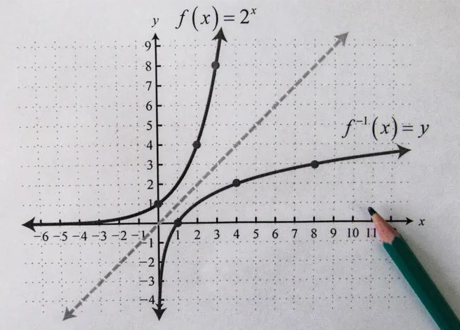

Inversa de Funções
A inversa de uma função é outra função que "desfaz" a operação da função original. Em outras palavras, se você tem uma função f que mapeia elementos de um conjunto A para um conjunto B, a inversa de f, denotada como f-¹ é uma função que mapeia elementos de B de volta para elementos de A, desde que a função original seja "reversível".
Para uma função ter uma inversa, ela deve atender a algumas condições específicas:
- Função bijetora: A função deve ser bijetora, ou seja, deve ser tanto injetora quanto sobrejetora. Isso garante que cada valor do domínio seja mapeado para um único valor da imagem e que todos os valores do contradomínio sejam alcançados.
- Troca de variáveis: A inversa inverte os papéis das variáveis de entrada e saída. Se f(x) = y, ent a inversa f-¹(y) = x.
Em termos matemáticos, a relação entre uma função f e sua inversa f-¹ é dada por:
f-¹(f(x)) = x
f(f-¹(y)) = y
A primeira equação mostra que, se você aplicar a função f e depois a inversa f-¹ ao resultado, você obtém de volta o valor original x. Já a segunda equação mostra o inverso: se você aplicar a inversa f-¹ e depois a função f ao resultado, você obtém de volta o valor original y.
Nem todas as funções possuem inversas. Funções que não são bijetoras (ou seja, não têm uma correspondência um-a-um entre elementos do domínio e do contradomínio) não possuem inversas. Além disso, funções que não são "reversíveis", como funções trigonométricas, podem não ter inversas em todos os seus domínios.
A inversa de uma função é útil para resolver equações envolvendo a função original e para entender as relações entre os valores do domínio e da imagem. No entanto, nem sempre uma função possui uma inversa, e determinar se uma função tem uma inversa ou não requer análise cuidadosa das propriedades da função.
